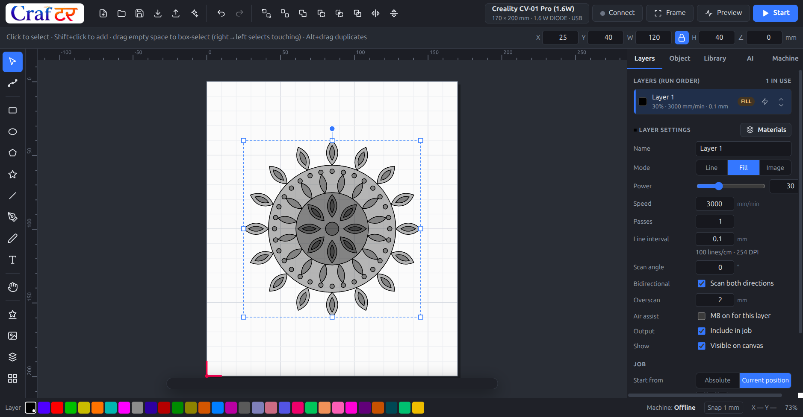

A desktop studio for laser engravers and cutters. Draw or import your design, set per-layer power and speed, preview the toolpath, and drive the machine over USB — all in one app. Free and open source.

A 120 mm mandala placed on a Creality CV-01 Pro bed, with engrave settings on the active layer.
Crafter Studio covers the whole job: drawing, layout, machine settings, G-code and the run itself.
Rectangles, ellipses, polygons, stars, Bézier pen, freehand pencil and node editing. Text in any installed font, converted to outlines.
Union, difference, intersection, exclusion, divide and offset. Grid and circular arrays, align and distribute, full undo history.
SVG with real units, DXF with arcs, splines and blocks, and bitmaps with dithering and trace-to-vector. Drag and drop works.
215 ready-to-cut pieces — mandalas, frames, festival and celebration designs — plus over 13,000 searchable icons. Keep your own files in My Library.
30 colour layers in the familiar style. Each carries its own mode, power, speed, passes, line interval, scan angle, overscan and air assist.
Starting points for wood, acrylic, leather, paper, slate, glass, metals and 3D-printing filaments — with a test-grid generator to dial them in.
GRBL, grblHAL/FluidNC, Marlin and Smoothieware. Cuts inner shapes before outer, shortens travel, estimates job time, previews the toolpath.
Connect, jog, home, set origin, frame the job and run it with live progress and a console. Around 380 machine profiles from 46 brands.
Describe what you want and get geometry that is actually cuttable — closed contours, sane feature sizes, and colours already mapped to the right layers.
Current release: 1.2.1. No installer bundling, no account, no telemetry.
Installer (choose your folder) or a portable .exe that runs from anywhere, including a USB stick.
A single x86-64 AppImage. Mark it executable and run it — no installation, no dependencies to chase.
Get the latest releaseNode 22 and npm 10, then npm install and npm run dist. The full source is on GitHub under the ISC licence.
Windows 10 or later, or a 64-bit Linux desktop. Direct machine control needs a controller that speaks GRBL, grblHAL/FluidNC, Marlin or Smoothieware over USB. Ruida, Trocen, TopWisdom, galvo and cloud-only machines are supported for design and SVG export, not direct control.
It is open source under the ISC licence: use it commercially, modify it, redistribute it, no strings. There is no paid tier and nothing is held back.
If it saved you a job, a wasted sheet of ply, or an afternoon of fighting another tool, a one-off contribution helps pay for new machine profiles, test materials and the hardware needed to verify them.
Support the project on Ko-fi